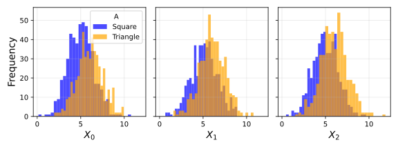
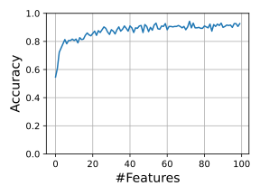
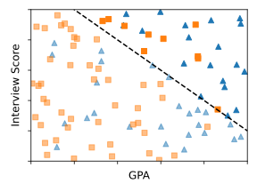

Data-Centric AI (Module II)
Fairness
Matteo Francia
DISI — University of Bologna
m.francia@unibo.it
Learning Outcomes
By the end of this three-hour lab, you should be able to:
- Explain why bias in machine learning is usually a system problem, not only a model problem.
- Distinguish fairness through unawareness, demographic parity, calibration, error-rate balance, representational fairness, counterfactual fairness, and individual fairness.
- Audit a real tabular dataset with disaggregated metrics using
fairlearn.metrics.MetricFrame.
- Connect fairness metrics to data-centric questions about labels, sampling, missingness, proxies, and deployment.
- Compare baseline models with preprocessing, postprocessing, and reductions-based mitigation strategies in Fairlearn.
- Argue which fairness definition is appropriate for a concrete data problem, and what it cannot guarantee.
This lab starts from core bias and fairness definitions, then turns them into hands-on checks on real-world datasets.
1. Bias and Fairness: Core Ideas
The PDF opens with two motivating examples:
- Gender Shades: commercial face analysis systems performed unevenly across gender and skin tone groups.
- COMPAS: a criminal-justice risk score used to estimate recidivism risk. ProPublica reported that Black defendants were more likely than White defendants to be incorrectly flagged as high risk, while White defendants were more likely to be incorrectly flagged as low risk.
The important data-centric point is that both examples are not only about a bad classifier. They force us to ask: who is represented in the data, how labels are created, what errors matter, where the model is deployed, and who is harmed when the model is wrong.
Prediction Setup
We frame supervised prediction with random variables:
X: observed input features, such as pixels, SAT score, income attributes, hospital admission data, or ZIP code.A: sensitive or protected group attribute, such as race, sex, age group, or disability status.Y: true or observed label, such as college success, loan repayment, recidivism, income, or readmission.Y_hat = h(X): the prediction produced by a learned model.
The full population distribution P(X, A, Y) is not available. We only have samples. Those samples may be missing, noisy, unlabeled, unrepresentative, or historically biased. This is why fairness belongs in data-centric AI: the dataset is part of the model’s behavior.
Equality, Equity, and Justice
Fairness work often starts with a simple question: are we giving everyone the same treatment, or are we changing the system so people can reach comparable outcomes?
Data-centric AI should aim beyond cosmetic parity. Sometimes the right intervention is not a new threshold, but better measurement, better coverage, or removing a structural obstacle in the data-generating process.
What Bias Is Not
From the source PDF:
- Bias is not necessarily malicious. It can appear even when data collectors, engineers, domain experts, and decision makers have good intentions.
- Bias is not one and done. A model that looks acceptable today may become unfair after the population, data pipeline, policy, or deployment setting changes.
- Bias is not new. Researchers and practitioners have discussed discrimination, fairness, and measurement harms for decades.
For data-centric AI, this means fairness work must be part of the dataset lifecycle: collection, annotation, preprocessing, validation, monitoring, and model use.
Why Different Treatment Happens
Different treatment usually does not require a programmer to intentionally encode racism, sexism, or another discriminatory rule.
Common data causes include:
- the training set is not representative of the deployment population,
- absence of data reflects historical exclusion,
- small subgroup sample sizes do not generalize well,
- labels encode previous biased decisions,
- features include proxies for protected attributes,
- and data quality differs across groups.
So an audit should ask not only “what did the model learn?” but also “what world did the dataset measure?”
What Bias Is
The PDF describes bias as a term with multiple related meanings, including disparate treatment, disparate impact, fairness, and discrimination.
A useful working definition for this lab:
A machine-learning system is biased when its data, modeling process, or deployment context creates systematically different errors, opportunities, or harms for different groups.
The PDF emphasizes three sources:
- Data collection bias: who appears in the data, who is missing, and under what conditions measurements are made.
- Algorithmic process bias: how features, objectives, thresholds, and validation metrics encode priorities.
- Deployment bias: how predictions are interpreted and used by humans or institutions.
Protected Classes and Regulated Domains
The source PDF lists examples of protected classes:
- Race
- Sex
- Religion
- National origin
- Citizenship
- Pregnancy
- Disability status
- Genetic information
It also highlights regulated domains where fairness questions are especially consequential:
- Credit
- Education
- Employment
- Housing
Healthcare and criminal justice are also high-stakes settings even when the specific legal framework differs by country.
Quantitative Fairness Definitions
The PDF presents several definitions. We will connect each one to code later.
Let Y be the true label, Y_hat the model prediction, S a risk score, X ordinary features, and A a sensitive attribute such as sex, race, or age group.
| Fairness through unawareness |
Do not use A directly |
proxy variables can still encode A |
| Group fairness / demographic parity |
equal positive prediction rates across groups |
may conflict with different base rates |
| Calibration |
same meaning of score S across groups |
can conflict with equal error rates |
| Error-rate balance |
equal false positive or false negative rates |
which error matters depends on the domain |
| Representational fairness |
learn representations with less group information |
useful features and sensitive information may be entangled |
| Counterfactual fairness |
prediction would not change if group membership changed in a causal model |
depends on a credible causal graph |
| Individual fairness |
similar people should receive similar decisions |
defining similarity is difficult |
Statistical Parity and Equal Opportunity
Two group-fairness definitions are worth making explicit.
Statistical parity asks for equal positive prediction rates:
P(Y_hat = 1 | A = a) = P(Y_hat = 1 | A = b)
In Fairlearn this is usually operationalized with selection rate and demographic parity difference.
Equal opportunity asks for equal true positive rates:
P(Y_hat = 1 | Y = 1, A = a) = P(Y_hat = 1 | Y = 1, A = b)
This is useful when missing qualified or truly positive cases is the central harm.
College-Admissions Toy Example
A simplified admissions task makes the issue concrete:
X is SAT score.A is group membership, shown as two shapes.Y is whether an applicant would succeed in college.Y_hat is the admit/reject decision.
The toy setup assumes SAT is predictive within both groups, but one group has a shifted score distribution because of external conditions such as test preparation access or retake opportunities.
This example shows why “shape-blind” or group-unaware modeling can fail: even if the model never sees A, it may infer group membership through correlated features.
Visualizing Distributional Bias
A model can look accurate overall while one group lives in a different part of the feature space.

When groups are distributed differently, average validation metrics hide where the model is extrapolating, underfitting, or relying on proxies.
Incompatibility and Trade-Offs
The PDF stresses that fairness definitions can be mutually incompatible. In particular, calibration and error-rate balance generally cannot both hold when groups have different base rates, except in special cases.
That is why this lab does not ask whether a model is simply “fair” or “unfair”. Instead, we ask:
- What decision is being made?
- Which group attribute is relevant to audit?
- Which errors are most harmful?
- Is the target label a good proxy for the real-world construct?
- Which fairness metric matches the intended use?
- What data changes would reduce the problem before changing the model?
No Fair Lunch
The incompatibility result is often phrased as a no fair lunch problem. In a real-world ML system, we may want all of the following:
- statistical parity,
- equal false negative rates,
- equal false positive rates,
- high accuracy across subgroups.
In general, these cannot all be achieved simultaneously unless the groups have the same underlying distribution. This is rare because data collection, access, measurement, and historical decisions already differ across groups.
Fairness as a Multi-Objective Problem
A data-centric fairness workflow is naturally a multi-objective optimization problem. We rarely optimize only predictive performance.
For a model or decision rule h, we may want to:
- maximize utility:
balanced_accuracy(h), profit, recall, or another task metric,
- minimize disparity: demographic parity gap, equal opportunity gap, equalized odds gap,
- minimize data risk: missingness, subgroup undercoverage, label noise, proxy leakage,
- satisfy constraints: minimum subgroup sample size, maximum false negative gap, acceptable documentation quality.
One compact formulation is:
maximize (utility(h), -fairness_gap(h), -data_risk(h))
subject to domain constraints such as FNR_gap(h) <= delta and support(group) >= n_min.
The important point is that there is usually no single best model. There are non-dominated choices: one model is better on accuracy, another is better on fairness, another may be easier to justify because it depends on cleaner data.
Ways to Choose Among Objectives
Common strategies:
| Hard constraint |
maximize accuracy subject to a fairness limit |
the limit may be arbitrary |
| Scalarization |
combine objectives, e.g. score = accuracy - lambda * disparity |
hides value choices inside weights |
| Lexicographic rule |
satisfy fairness first, then optimize accuracy |
can discard useful trade-offs |
| Pareto frontier |
keep all non-dominated candidates for review |
still requires a human decision |
For this lab, use the frontier as a conversation tool. The final decision should combine metrics, data evidence, domain harm, and policy judgment.
Visualizing Unequal Error
The source PDF highlights the trade-off between error rate and disparate impact. This figure is a reminder to audit model behavior by group, not only globally.

In the code sections, the same idea becomes disaggregated accuracy, selection rate, false positive rate, and false negative rate.
COMPAS Follow-Up Questions
The PDF uses COMPAS to show that fairness cannot be reduced to one spreadsheet column.
Discussion prompts:
- If the two-year cutoff for recidivism is implemented incorrectly, is the model unfair, invalid, or both?
- If an input question is subjective, whose subjectivity enters the data?
- Should police-search thresholds, detention thresholds, and rehabilitation-support thresholds optimize the same metric?
- If judges use scores as one input but have final authority, where should auditing happen: model, human decision, or whole system?
Keep these questions in mind as we move into the code.
Visualizing Group Comparison
Fairness metrics compare model behavior across groups such as A=0 and A=1.

This is useful, but incomplete: group summaries can miss intersectional subgroups and can be unstable for small samples.
2. Setup
Run this cell in Colab or in a fresh environment. It installs only missing packages.
Fairlearn provides the datasets and mitigation algorithms used in this lab, including fetch_adult, fetch_diabetes_hospital, MetricFrame, ThresholdOptimizer, and ExponentiatedGradient.
Code
import importlib.util
import subprocess
import sys
required = ["fairlearn", "sklearn", "pandas", "numpy", "matplotlib", "seaborn"]
missing = [pkg for pkg in required if importlib.util.find_spec(pkg) is None]
if missing:
subprocess.check_call([sys.executable, "-m", "pip", "install", "--break-system-packages", "-q", "fairlearn", "scikit-learn", "pandas", "numpy", "matplotlib", "seaborn"])
print("Ready")
Code
import warnings
warnings.filterwarnings("ignore")
import numpy as np
import pandas as pd
import matplotlib.pyplot as plt
import seaborn as sns
from sklearn.compose import ColumnTransformer
from sklearn.impute import SimpleImputer
from sklearn.linear_model import LogisticRegression
from sklearn.metrics import accuracy_score, balanced_accuracy_score, confusion_matrix, roc_auc_score
from sklearn.model_selection import train_test_split
from sklearn.pipeline import Pipeline
from sklearn.preprocessing import OneHotEncoder, StandardScaler
from fairlearn.datasets import fetch_adult, fetch_diabetes_hospital
from fairlearn.metrics import (
MetricFrame,
selection_rate,
true_positive_rate,
false_positive_rate,
false_negative_rate,
demographic_parity_difference,
equalized_odds_difference,
)
from fairlearn.postprocessing import ThresholdOptimizer
from fairlearn.reductions import ExponentiatedGradient, DemographicParity, EqualizedOdds
RANDOM_STATE = 42
sns.set_theme(style="whitegrid")
Helper Functions
These functions keep the lab focused on interpretation rather than repeated plotting code.
Code
def clean_adult_missing_values(df):
return df.replace("?", np.nan)
def describe_by_group(df, group_col, target_col):
summary = (
df.groupby(group_col, dropna=False)[target_col]
.agg(count="size", positive_rate="mean")
.sort_values("count", ascending=False)
)
summary["share"] = summary["count"] / summary["count"].sum()
return summary[["count", "share", "positive_rate"]]
def make_tabular_pipeline(X):
categorical_features = X.select_dtypes(include=["object", "category", "bool"]).columns.tolist()
numeric_features = X.select_dtypes(include=["number"]).columns.tolist()
numeric_transformer = Pipeline(
steps=[
("imputer", SimpleImputer(strategy="median")),
("scaler", StandardScaler()),
]
)
categorical_transformer = Pipeline(
steps=[
("imputer", SimpleImputer(strategy="most_frequent")),
("onehot", OneHotEncoder(handle_unknown="ignore", min_frequency=20)),
]
)
preprocessor = ColumnTransformer(
transformers=[
("num", numeric_transformer, numeric_features),
("cat", categorical_transformer, categorical_features),
]
)
clf = LogisticRegression(max_iter=1000, solver="liblinear", random_state=RANDOM_STATE)
return Pipeline(steps=[("preprocess", preprocessor), ("model", clf)])
def fairness_report(y_true, y_pred, sensitive_features):
metrics = {
"accuracy": accuracy_score,
"balanced_accuracy": balanced_accuracy_score,
"selection_rate": selection_rate,
"true_positive_rate": true_positive_rate,
"false_positive_rate": false_positive_rate,
"false_negative_rate": false_negative_rate,
}
mf = MetricFrame(
metrics=metrics,
y_true=y_true,
y_pred=y_pred,
sensitive_features=sensitive_features,
)
display(pd.DataFrame({"overall": mf.overall}))
display(mf.by_group)
print("Demographic parity difference:", round(demographic_parity_difference(y_true, y_pred, sensitive_features=sensitive_features), 3))
print("Equalized odds difference:", round(equalized_odds_difference(y_true, y_pred, sensitive_features=sensitive_features), 3))
return mf
def plot_group_metric(metric_frame, metric_name, title):
ax = metric_frame.by_group[metric_name].sort_values().plot(kind="barh", figsize=(8, 4))
ax.set_title(title)
ax.set_xlabel(metric_name)
plt.show()
3. Adult Income Dataset: Understand the Data First
The Adult dataset is a real census-derived tabular dataset commonly used for fairness tutorials. The prediction task is whether annual income exceeds 50K USD.
Sensitive attributes often audited in this dataset include sex and race. We will begin with sex, then inspect intersectional groups.
Code
adult = fetch_adult(as_frame=True)
X_adult_raw = clean_adult_missing_values(adult.data.copy())
y_adult = (adult.target == ">50K").astype(int)
adult_df = X_adult_raw.copy()
adult_df["income_gt_50k"] = y_adult
print(adult.DESCR.splitlines()[0])
print("Rows:", adult_df.shape[0], "Columns:", adult_df.shape[1])
adult_df.head()
**Author**: Ronny Kohavi and Barry Becker
Rows: 48842 Columns: 15
| 0 |
25 |
Private |
226802 |
11th |
7 |
Never-married |
Machine-op-inspct |
Own-child |
Black |
Male |
0 |
0 |
40 |
United-States |
0 |
| 1 |
38 |
Private |
89814 |
HS-grad |
9 |
Married-civ-spouse |
Farming-fishing |
Husband |
White |
Male |
0 |
0 |
50 |
United-States |
0 |
| 2 |
28 |
Local-gov |
336951 |
Assoc-acdm |
12 |
Married-civ-spouse |
Protective-serv |
Husband |
White |
Male |
0 |
0 |
40 |
United-States |
1 |
| 3 |
44 |
Private |
160323 |
Some-college |
10 |
Married-civ-spouse |
Machine-op-inspct |
Husband |
Black |
Male |
7688 |
0 |
40 |
United-States |
1 |
| 4 |
18 |
NaN |
103497 |
Some-college |
10 |
Never-married |
NaN |
Own-child |
White |
Female |
0 |
0 |
30 |
United-States |
0 |
Code
<class 'pandas.DataFrame'>
RangeIndex: 48842 entries, 0 to 48841
Data columns (total 15 columns):
# Column Non-Null Count Dtype
--- ------ -------------- -----
0 age 48842 non-null int64
1 workclass 46043 non-null category
2 fnlwgt 48842 non-null int64
3 education 48842 non-null category
4 education-num 48842 non-null int64
5 marital-status 48842 non-null category
6 occupation 46033 non-null category
7 relationship 48842 non-null category
8 race 48842 non-null category
9 sex 48842 non-null category
10 capital-gain 48842 non-null int64
11 capital-loss 48842 non-null int64
12 hours-per-week 48842 non-null int64
13 native-country 47985 non-null category
14 income_gt_50k 48842 non-null int64
dtypes: category(8), int64(7)
memory usage: 3.0 MB
Data-Centric Audit Questions
Before fitting a model, inspect the dataset itself.
- Who is represented most often?
- Where are values missing?
- Does the label distribution differ by group?
- Which features might act as proxies for protected attributes?
- Is income above 50K a neutral construct, or does it already reflect historical labor-market inequality?
Code
missing = adult_df.isna().mean().sort_values(ascending=False)
missing[missing > 0]
occupation 0.057512
workclass 0.057307
native-country 0.017546
dtype: float64
Code
display(describe_by_group(adult_df, "sex", "income_gt_50k"))
display(describe_by_group(adult_df, "race", "income_gt_50k"))
| sex |
|
|
|
| Male |
32650 |
0.668482 |
0.303767 |
| Female |
16192 |
0.331518 |
0.109251 |
| race |
|
|
|
| White |
41762 |
0.855043 |
0.253987 |
| Black |
4685 |
0.095922 |
0.120811 |
| Asian-Pac-Islander |
1519 |
0.031100 |
0.269256 |
| Amer-Indian-Eskimo |
470 |
0.009623 |
0.117021 |
| Other |
406 |
0.008313 |
0.123153 |
Code
fig, axes = plt.subplots(1, 2, figsize=(13, 4))
sns.countplot(data=adult_df, y="sex", order=adult_df["sex"].value_counts().index, ax=axes[0])
axes[0].set_title("Representation by sex")
sns.barplot(data=adult_df, x="income_gt_50k", y="sex", estimator=np.mean, errorbar=None, ax=axes[1])
axes[1].set_title("Observed positive-label rate by sex")
axes[1].set_xlabel("P(income > 50K)")
plt.tight_layout()
plt.show()
Checkpoint: Is the Label Itself Fair?
income_gt_50k is an observed outcome, not a pure measure of ability, qualification, or merit. Historical discrimination can be present inside the label.
In pairs, write down one way each component could create disparity:
- data collection
- target definition
- feature availability
- missing-value pattern
- train/test split
- deployment threshold
4. Baseline Model and Fairness Through Unawareness
First we remove sex and race from the feature matrix. This tests the idea from the PDF called fairness through unawareness: do not give protected attributes to the model.
The warning is that other variables can still be proxies. For example, occupation, relationship, education, hours worked, and capital gains may encode social patterns associated with protected groups.
Inequality Can Be in the Label
The Adult task predicts observed income, but observed income is not a neutral measurement of skill or worth.
Before changing the model, ask whether the target variable already contains the social inequality the model will learn to reproduce.
Code
sensitive_sex = X_adult_raw["sex"]
sensitive_race = X_adult_raw["race"]
X_adult_unaware = X_adult_raw.drop(columns=["sex", "race"])
X_train, X_test, y_train, y_test, sex_train, sex_test, race_train, race_test = train_test_split(
X_adult_unaware,
y_adult,
sensitive_sex,
sensitive_race,
test_size=0.30,
random_state=RANDOM_STATE,
stratify=y_adult,
)
baseline = make_tabular_pipeline(X_train)
baseline.fit(X_train, y_train)
y_pred_base = baseline.predict(X_test)
y_score_base = baseline.predict_proba(X_test)[:, 1]
print("Accuracy:", round(accuracy_score(y_test, y_pred_base), 3))
print("Balanced accuracy:", round(balanced_accuracy_score(y_test, y_pred_base), 3))
print("ROC AUC:", round(roc_auc_score(y_test, y_score_base), 3))
Accuracy: 0.854
Balanced accuracy: 0.764
ROC AUC: 0.905
Code
mf_sex_base = fairness_report(y_test, y_pred_base, sensitive_features=sex_test)
| accuracy |
0.853955 |
| balanced_accuracy |
0.764021 |
| selection_rate |
0.189859 |
| true_positive_rate |
0.591557 |
| false_positive_rate |
0.063515 |
| false_negative_rate |
0.408443 |
| sex |
|
|
|
|
|
|
| Female |
0.928351 |
0.753908 |
0.078032 |
0.528029 |
0.020214 |
0.471971 |
| Male |
0.817068 |
0.756352 |
0.245304 |
0.603454 |
0.090750 |
0.396546 |
Demographic parity difference: 0.167
Equalized odds difference: 0.075
Code
plot_group_metric(mf_sex_base, "selection_rate", "Baseline selection rate by sex")
plot_group_metric(mf_sex_base, "false_negative_rate", "Baseline false negative rate by sex")
Interpretation
If the model predicts positive outcomes for one group much more often than another, demographic parity is violated. If false positive or false negative rates differ strongly, error-rate balance is violated.
A data-centric audit asks whether the observed gap comes from:
- different base rates in the collected data,
- missing or low-quality measurements for one group,
- proxy variables that reconstruct the sensitive attribute,
- an objective function that optimizes average accuracy while hiding subgroup errors,
- or a threshold that is not appropriate for all groups.
5. Intersectional Auditing
Auditing only one sensitive attribute can hide smaller groups. Fairlearn allows sensitive features to be a DataFrame, so we can audit intersections such as sex by race.
Code
intersection_test = pd.DataFrame({"sex": sex_test, "race": race_test})
mf_intersection = MetricFrame(
metrics={
"count": lambda yt, yp: len(yt),
"accuracy": accuracy_score,
"selection_rate": selection_rate,
"false_negative_rate": false_negative_rate,
},
y_true=y_test,
y_pred=y_pred_base,
sensitive_features=intersection_test,
)
mf_intersection.by_group.sort_values("count", ascending=False)
| sex |
race |
|
|
|
|
| Male |
White |
8569.0 |
0.812930 |
0.254639 |
0.391937 |
| Female |
White |
3886.0 |
0.924086 |
0.083891 |
0.467505 |
| Male |
Black |
762.0 |
0.868766 |
0.148294 |
0.454545 |
| Female |
Black |
709.0 |
0.956276 |
0.039492 |
0.533333 |
| Male |
Asian-Pac-Islander |
299.0 |
0.775920 |
0.304348 |
0.384615 |
| Female |
Asian-Pac-Islander |
162.0 |
0.901235 |
0.117284 |
0.434783 |
| Male |
Amer-Indian-Eskimo |
94.0 |
0.872340 |
0.117021 |
0.529412 |
| Other |
72.0 |
0.861111 |
0.083333 |
0.700000 |
| Female |
Other |
56.0 |
0.946429 |
0.053571 |
0.500000 |
| Amer-Indian-Eskimo |
44.0 |
0.931818 |
0.068182 |
0.500000 |
Checkpoint: Reliability of Subgroup Metrics
Small groups can produce noisy estimates. When a subgroup has few examples, a large disparity may be real, random, or both.
Data-centric fixes may include collecting more data, improving subgroup coverage, auditing annotation consistency, or reporting uncertainty intervals. They are not always model changes.
6. Mitigation A: Postprocessing with ThresholdOptimizer
ThresholdOptimizer changes decision thresholds by sensitive group after a model is trained. This is useful when scores are available and the deployment decision is threshold-based.
Here we enforce demographic parity. That means selection rates are pushed closer together. Whether this is desirable depends on the application.
Code
threshold_dp = ThresholdOptimizer(
estimator=baseline,
constraints="demographic_parity",
objective="balanced_accuracy_score",
predict_method="predict_proba",
prefit=True,
)
threshold_dp.fit(X_train, y_train, sensitive_features=sex_train)
y_pred_threshold_dp = threshold_dp.predict(X_test, sensitive_features=sex_test)
mf_threshold_dp = fairness_report(y_test, y_pred_threshold_dp, sensitive_features=sex_test)
| accuracy |
0.785982 |
| balanced_accuracy |
0.781519 |
| selection_rate |
0.344639 |
| true_positive_rate |
0.772961 |
| false_positive_rate |
0.209922 |
| false_negative_rate |
0.227039 |
| sex |
|
|
|
|
|
|
| Female |
0.740581 |
0.829197 |
0.360511 |
0.943942 |
0.285548 |
0.056058 |
| Male |
0.808493 |
0.789293 |
0.336770 |
0.740941 |
0.162356 |
0.259059 |
Demographic parity difference: 0.024
Equalized odds difference: 0.203
Mitigation B: Reductions with ExponentiatedGradient
ExponentiatedGradient trains a randomized classifier subject to a fairness constraint. Unlike thresholding, it changes the training objective.
We use an EqualizedOdds constraint because the COMPAS discussion in the PDF is fundamentally about error rates: who is incorrectly marked high risk and who is incorrectly marked low risk.
Code
base_for_reduction = make_tabular_pipeline(X_train)
reduction_eo = ExponentiatedGradient(
estimator=base_for_reduction,
constraints=EqualizedOdds(),
eps=0.02,
max_iter=25,
sample_weight_name="model__sample_weight",
)
reduction_eo.fit(X_train, y_train, sensitive_features=sex_train)
y_pred_reduction_eo = reduction_eo.predict(X_test)
mf_reduction_eo = fairness_report(y_test, y_pred_reduction_eo, sensitive_features=sex_test)
| accuracy |
0.841739 |
| balanced_accuracy |
0.732433 |
| selection_rate |
0.169180 |
| true_positive_rate |
0.522818 |
| false_positive_rate |
0.057953 |
| false_negative_rate |
0.477182 |
| sex |
|
|
|
|
|
|
| Female |
0.906321 |
0.745417 |
0.102121 |
0.537071 |
0.046236 |
0.462929 |
| Male |
0.809718 |
0.727413 |
0.202430 |
0.520149 |
0.065322 |
0.479851 |
Demographic parity difference: 0.1
Equalized odds difference: 0.019
Code
comparison = pd.DataFrame(
[
{
"model": "baseline_unaware",
"accuracy": accuracy_score(y_test, y_pred_base),
"balanced_accuracy": balanced_accuracy_score(y_test, y_pred_base),
"demographic_parity_diff": demographic_parity_difference(y_test, y_pred_base, sensitive_features=sex_test),
"equalized_odds_diff": equalized_odds_difference(y_test, y_pred_base, sensitive_features=sex_test),
},
{
"model": "threshold_demographic_parity",
"accuracy": accuracy_score(y_test, y_pred_threshold_dp),
"balanced_accuracy": balanced_accuracy_score(y_test, y_pred_threshold_dp),
"demographic_parity_diff": demographic_parity_difference(y_test, y_pred_threshold_dp, sensitive_features=sex_test),
"equalized_odds_diff": equalized_odds_difference(y_test, y_pred_threshold_dp, sensitive_features=sex_test),
},
{
"model": "reduction_equalized_odds",
"accuracy": accuracy_score(y_test, y_pred_reduction_eo),
"balanced_accuracy": balanced_accuracy_score(y_test, y_pred_reduction_eo),
"demographic_parity_diff": demographic_parity_difference(y_test, y_pred_reduction_eo, sensitive_features=sex_test),
"equalized_odds_diff": equalized_odds_difference(y_test, y_pred_reduction_eo, sensitive_features=sex_test),
},
]
)
comparison.round(3)
| 0 |
baseline_unaware |
0.854 |
0.764 |
0.167 |
0.075 |
| 1 |
threshold_demographic_parity |
0.786 |
0.782 |
0.024 |
0.203 |
| 2 |
reduction_equalized_odds |
0.842 |
0.732 |
0.100 |
0.019 |
Exercise: Build a Small Multi-Objective Frontier
The frontier does not tell us which trade-off is appropriate. It only shows what trade-offs are available under a modeling setup.
Here we sweep a single global decision threshold and evaluate each threshold as a candidate solution with multiple objectives:
- maximize balanced accuracy,
- minimize demographic parity difference,
- minimize equal opportunity difference,
- minimize equalized odds difference.
This is not a full fairness intervention by itself, but it makes the multi-objective nature of fairness visible before we introduce group-aware mitigation.
Code
def is_dominated(row, frame, maximize, minimize):
"""Return True if another row is at least as good on every objective and better on one."""
for _, other in frame.iterrows():
if other.name == row.name:
continue
at_least_as_good = all(other[m] >= row[m] for m in maximize) and all(other[m] <= row[m] for m in minimize)
strictly_better = any(other[m] > row[m] for m in maximize) or any(other[m] < row[m] for m in minimize)
if at_least_as_good and strictly_better:
return True
return False
threshold_rows = []
for threshold in np.linspace(0.05, 0.95, 19):
y_pred_threshold = (y_score_base >= threshold).astype(int)
threshold_rows.append(
{
"threshold": threshold,
"balanced_accuracy": balanced_accuracy_score(y_test, y_pred_threshold),
"selection_rate": selection_rate(y_test, y_pred_threshold),
"demographic_parity_diff": demographic_parity_difference(y_test, y_pred_threshold, sensitive_features=sex_test),
"equal_opportunity_diff": MetricFrame(
metrics=true_positive_rate,
y_true=y_test,
y_pred=y_pred_threshold,
sensitive_features=sex_test,
).difference(),
"equalized_odds_diff": equalized_odds_difference(y_test, y_pred_threshold, sensitive_features=sex_test),
}
)
threshold_sweep = pd.DataFrame(threshold_rows)
maximize = ["balanced_accuracy"]
minimize = ["demographic_parity_diff", "equal_opportunity_diff", "equalized_odds_diff"]
threshold_sweep["pareto_candidate"] = ~threshold_sweep.apply(is_dominated, axis=1, frame=threshold_sweep, maximize=maximize, minimize=minimize)
# Example scalarization: change lambda_fairness to express a different value judgment.
lambda_fairness = 0.5
threshold_sweep["scalarized_score"] = threshold_sweep["balanced_accuracy"] - lambda_fairness * threshold_sweep["equalized_odds_diff"]
threshold_sweep.sort_values(["pareto_candidate", "scalarized_score"], ascending=[False, False]).round(3)
| 7 |
0.40 |
0.794 |
0.239 |
0.205 |
0.085 |
0.101 |
True |
0.743 |
| 6 |
0.35 |
0.805 |
0.270 |
0.229 |
0.088 |
0.125 |
True |
0.743 |
| 8 |
0.45 |
0.779 |
0.212 |
0.187 |
0.082 |
0.086 |
True |
0.736 |
| 5 |
0.30 |
0.813 |
0.309 |
0.260 |
0.104 |
0.157 |
True |
0.734 |
| 9 |
0.50 |
0.764 |
0.190 |
0.167 |
0.075 |
0.075 |
True |
0.726 |
| 4 |
0.25 |
0.817 |
0.352 |
0.299 |
0.118 |
0.201 |
True |
0.717 |
| 10 |
0.55 |
0.742 |
0.166 |
0.149 |
0.076 |
0.076 |
True |
0.704 |
| 3 |
0.20 |
0.816 |
0.396 |
0.330 |
0.114 |
0.239 |
True |
0.697 |
| 11 |
0.60 |
0.720 |
0.145 |
0.131 |
0.067 |
0.067 |
True |
0.686 |
| 2 |
0.15 |
0.810 |
0.442 |
0.353 |
0.102 |
0.272 |
True |
0.674 |
| 12 |
0.65 |
0.699 |
0.125 |
0.111 |
0.065 |
0.065 |
True |
0.666 |
| 13 |
0.70 |
0.679 |
0.105 |
0.090 |
0.045 |
0.045 |
True |
0.657 |
| 1 |
0.10 |
0.794 |
0.504 |
0.348 |
0.064 |
0.281 |
True |
0.653 |
| 14 |
0.75 |
0.655 |
0.087 |
0.073 |
0.022 |
0.022 |
True |
0.643 |
| 0 |
0.05 |
0.747 |
0.604 |
0.292 |
0.020 |
0.242 |
True |
0.626 |
| 15 |
0.80 |
0.627 |
0.069 |
0.059 |
0.026 |
0.026 |
True |
0.614 |
| 16 |
0.85 |
0.600 |
0.053 |
0.043 |
0.006 |
0.006 |
True |
0.598 |
| 17 |
0.90 |
0.577 |
0.039 |
0.033 |
0.012 |
0.012 |
True |
0.571 |
| 18 |
0.95 |
0.555 |
0.027 |
0.022 |
0.005 |
0.005 |
True |
0.553 |
Code
fig, ax = plt.subplots(figsize=(7, 5))
sns.lineplot(
data=threshold_sweep,
x="equalized_odds_diff",
y="balanced_accuracy",
marker="o",
ax=ax,
)
for _, row in threshold_sweep.iloc[::3].iterrows():
ax.text(row["equalized_odds_diff"], row["balanced_accuracy"], f'{row["threshold"]:.2f}', fontsize=8)
ax.set_title("Threshold sweep as a small accuracy-fairness frontier")
ax.set_xlabel("Equalized odds difference, lower is better")
ax.set_ylabel("Balanced accuracy, higher is better")
plt.tight_layout()
plt.show()
Code
frontier = threshold_sweep[threshold_sweep["pareto_candidate"]].copy()
fig, ax = plt.subplots(figsize=(7, 5))
sns.scatterplot(
data=threshold_sweep,
x="equalized_odds_diff",
y="balanced_accuracy",
color="lightgray",
s=70,
label="dominated or unselected",
ax=ax,
)
sns.scatterplot(
data=frontier,
x="equalized_odds_diff",
y="balanced_accuracy",
color="tab:red",
s=120,
label="Pareto candidates",
ax=ax,
)
for _, row in frontier.iterrows():
ax.text(row["equalized_odds_diff"], row["balanced_accuracy"], f'{row["threshold"]:.2f}', fontsize=8)
ax.set_title("Non-dominated threshold candidates")
ax.set_xlabel("Equalized odds difference, lower is better")
ax.set_ylabel("Balanced accuracy, higher is better")
plt.tight_layout()
plt.show()
Checkpoint: Multi-Objective Decision
Choose one threshold or mitigation strategy and justify it using a decision rule:
- Constraint: “I require equalized odds difference below X, then choose the highest balanced accuracy.”
- Scalarization: “I use this value of
lambda_fairness because this domain makes disparity costly.”
- Frontier review: “I keep these candidates and reject dominated ones, then make a policy decision.”
Then explain what data-centric action could move the frontier itself, not merely choose a different point on it.
Code
fig, ax = plt.subplots(figsize=(7, 5))
sns.scatterplot(
data=comparison,
x="equalized_odds_diff",
y="balanced_accuracy",
hue="model",
s=140,
ax=ax,
)
ax.set_title("Accuracy-fairness comparison")
ax.set_xlabel("Equalized odds difference, lower is better")
ax.set_ylabel("Balanced accuracy, higher is better")
ax.legend(bbox_to_anchor=(1.02, 1), loc="upper left")
plt.tight_layout()
plt.show()
Checkpoint: Which Mitigation Is Defensible?
Answer in your lab notes:
- Which model has the best average performance?
- Which model most improves the fairness metric you selected?
- What changed: data, model, threshold, or evaluation?
- Would you deploy a group-specific threshold in this domain? Why or why not?
- What missing information would you need before making a policy recommendation?
Data Heterogeneity and Proxy Targets
Two data-centric warnings matter for the second case study:
- Data heterogeneity: groups can differ in feature distributions, measurement quality, clinical histories, or language used in records. A single average model can hide these subgroup patterns.
- Proxy targets: a label can look objective while measuring the wrong thing. A healthcare example makes this concrete: predicting cost can appear to predict illness while actually reflecting unequal access and spending.
That is why the Diabetes readmission case asks whether readmitted_30_days measures patient need, hospital behavior, patient access, or some mixture of all three.
Code
# Exercise: inspect possible proxy features for sex.
# Categorical features with very different distributions across groups deserve domain review.
candidate_proxy = "relationship"
proxy_table = pd.crosstab(adult_df[candidate_proxy], adult_df["sex"], normalize="columns")
proxy_table.sort_values(proxy_table.columns[0], ascending=False)
| relationship |
|
|
| Not-in-family |
0.362525 |
0.205605 |
| Unmarried |
0.242589 |
0.036662 |
| Own-child |
0.208498 |
0.128790 |
| Wife |
0.143775 |
0.000092 |
| Other-relative |
0.042552 |
0.025023 |
| Husband |
0.000062 |
0.603828 |
Code
# Exercise: remove one suspected proxy and rerun the baseline.
# Change this list after your group discussion.
proxy_features_to_remove = ["relationship"]
X_train_less_proxy = X_train.drop(columns=[c for c in proxy_features_to_remove if c in X_train.columns])
X_test_less_proxy = X_test.drop(columns=[c for c in proxy_features_to_remove if c in X_test.columns])
less_proxy_model = make_tabular_pipeline(X_train_less_proxy)
less_proxy_model.fit(X_train_less_proxy, y_train)
y_pred_less_proxy = less_proxy_model.predict(X_test_less_proxy)
fairness_report(y_test, y_pred_less_proxy, sensitive_features=sex_test)
| accuracy |
0.853409 |
| balanced_accuracy |
0.761512 |
| selection_rate |
0.187402 |
| true_positive_rate |
0.585282 |
| false_positive_rate |
0.062259 |
| false_negative_rate |
0.414718 |
| sex |
|
|
|
|
|
|
| Female |
0.925880 |
0.717842 |
0.062384 |
0.448463 |
0.012779 |
0.551537 |
| Male |
0.817477 |
0.758762 |
0.249388 |
0.610904 |
0.093380 |
0.389096 |
Demographic parity difference: 0.187
Equalized odds difference: 0.162
<fairlearn.metrics._metric_frame.MetricFrame at 0x7fb837f6e950>
8. Second Case: Diabetes Hospital Readmission
The Diabetes 130-Hospitals dataset contains hospital admissions for patients diagnosed with diabetes. The target is whether the patient was readmitted within 30 days.
This is a different fairness problem from Adult income. A positive prediction can trigger extra care, but it can also trigger burdensome interventions. The right fairness metric depends on the action attached to the prediction.
Code
diabetes = fetch_diabetes_hospital(as_frame=True)
X_diab_raw = diabetes.data.copy().reset_index(drop=True)
y_diab_raw = pd.Series(diabetes.target).reset_index(drop=True)
if pd.api.types.is_numeric_dtype(y_diab_raw):
y_diab = y_diab_raw.astype(int)
else:
y_diab = y_diab_raw.astype(str).str.lower().isin(["1", "true", "yes", "readmitted", "<30"]).astype(int)
diab_df = X_diab_raw.copy()
diab_df["readmitted_30_days"] = y_diab
print("Rows:", diab_df.shape[0], "Columns:", diab_df.shape[1])
diab_df.head()
| 0 |
Caucasian |
Female |
'30 years or younger' |
Other |
Referral |
1 |
Other |
41 |
0 |
1 |
... |
No |
No |
False |
False |
False |
False |
False |
NO |
0 |
0 |
| 1 |
Caucasian |
Female |
'30 years or younger' |
'Discharged to Home' |
Emergency |
3 |
Missing |
59 |
0 |
18 |
... |
Ch |
Yes |
False |
False |
False |
False |
False |
>30 |
1 |
0 |
| 2 |
AfricanAmerican |
Female |
'30 years or younger' |
'Discharged to Home' |
Emergency |
2 |
Missing |
11 |
5 |
13 |
... |
No |
Yes |
False |
False |
False |
True |
True |
NO |
0 |
0 |
| 3 |
Caucasian |
Male |
'30-60 years' |
'Discharged to Home' |
Emergency |
2 |
Missing |
44 |
1 |
16 |
... |
Ch |
Yes |
False |
False |
False |
False |
False |
NO |
0 |
0 |
| 4 |
Caucasian |
Male |
'30-60 years' |
'Discharged to Home' |
Emergency |
1 |
Missing |
51 |
0 |
8 |
... |
Ch |
Yes |
False |
False |
False |
False |
False |
NO |
0 |
0 |
5 rows × 25 columns
Code
['race',
'gender',
'age',
'discharge_disposition_id',
'admission_source_id',
'time_in_hospital',
'medical_specialty',
'num_lab_procedures',
'num_procedures',
'num_medications',
'primary_diagnosis',
'number_diagnoses',
'max_glu_serum',
'A1Cresult',
'insulin',
'change',
'diabetesMed',
'medicare',
'medicaid',
'had_emergency',
'had_inpatient_days',
'had_outpatient_days',
'readmitted',
'readmit_binary',
'readmitted_30_days']
Choose a Sensitive Feature
This dataset includes demographic and clinical variables. We will audit race when available. If the local Fairlearn version exposes a different schema, inspect the columns above and choose another demographic column such as age.
Code
sensitive_col = "race" if "race" in X_diab_raw.columns else "age"
print("Sensitive feature:", sensitive_col)
display(describe_by_group(diab_df, sensitive_col, "readmitted_30_days"))
| race |
|
|
|
| Caucasian |
76099 |
0.747784 |
0.112906 |
| AfricanAmerican |
19210 |
0.188766 |
0.112181 |
| Unknown |
2273 |
0.022336 |
0.082710 |
| Hispanic |
2037 |
0.020017 |
0.104075 |
| Other |
1506 |
0.014799 |
0.096282 |
| Asian |
641 |
0.006299 |
0.101404 |
Code
X_diab = X_diab_raw.drop(columns=[sensitive_col])
X_d_train, X_d_test, y_d_train, y_d_test, a_d_train, a_d_test = train_test_split(
X_diab,
y_diab,
X_diab_raw[sensitive_col],
test_size=0.30,
random_state=RANDOM_STATE,
stratify=y_diab,
)
# Keep runtime reasonable for class. The dataset is large, so sampling is acceptable for the lab exercise.
train_sample = min(25000, len(X_d_train))
test_sample = min(15000, len(X_d_test))
rng = np.random.default_rng(RANDOM_STATE)
train_idx = rng.choice(X_d_train.index, size=train_sample, replace=False)
test_idx = rng.choice(X_d_test.index, size=test_sample, replace=False)
X_d_train_s = X_d_train.loc[train_idx]
y_d_train_s = y_d_train.loc[train_idx]
a_d_train_s = a_d_train.loc[train_idx]
X_d_test_s = X_d_test.loc[test_idx]
y_d_test_s = y_d_test.loc[test_idx]
a_d_test_s = a_d_test.loc[test_idx]
diabetes_model = make_tabular_pipeline(X_d_train_s)
diabetes_model.fit(X_d_train_s, y_d_train_s)
y_d_pred = diabetes_model.predict(X_d_test_s)
mf_diabetes = fairness_report(y_d_test_s, y_d_pred, sensitive_features=a_d_test_s)
| accuracy |
1.000000 |
| balanced_accuracy |
1.000000 |
| selection_rate |
0.112467 |
| true_positive_rate |
1.000000 |
| false_positive_rate |
0.000000 |
| false_negative_rate |
0.000000 |
| race |
|
|
|
|
|
|
| AfricanAmerican |
1.0 |
1.0 |
0.111613 |
1.0 |
0.0 |
0.0 |
| Asian |
1.0 |
1.0 |
0.105882 |
1.0 |
0.0 |
0.0 |
| Caucasian |
1.0 |
1.0 |
0.113987 |
1.0 |
0.0 |
0.0 |
| Hispanic |
1.0 |
1.0 |
0.124555 |
1.0 |
0.0 |
0.0 |
| Other |
1.0 |
1.0 |
0.079439 |
1.0 |
0.0 |
0.0 |
| Unknown |
1.0 |
1.0 |
0.082111 |
1.0 |
0.0 |
0.0 |
Demographic parity difference: 0.045
Equalized odds difference: 0.0
Healthcare Interpretation
For readmission prediction, a false negative may mean a patient who needs follow-up is missed. A false positive may mean a patient receives unnecessary outreach, cost, or monitoring.
Data-centric questions:
- Is readmission within 30 days a proxy for patient need, hospital access, insurance, or care quality?
- Are some groups less likely to return to the same hospital even when they are still sick?
- Are diagnostic codes and procedures measured consistently across hospitals and groups?
- Does the dataset encode treatment history, or only outcomes after unequal treatment has already occurred?
Code
# Exercise: focus the audit on groups with enough support.
counts = a_d_test_s.value_counts()
large_groups = counts[counts >= 200].index
mask = a_d_test_s.isin(large_groups)
mf_diabetes_large = fairness_report(
y_d_test_s[mask],
y_d_pred[mask],
sensitive_features=a_d_test_s[mask],
)
plot_group_metric(mf_diabetes_large, "false_negative_rate", "Diabetes false negative rate by group")
| accuracy |
1.000000 |
| balanced_accuracy |
1.000000 |
| selection_rate |
0.112504 |
| true_positive_rate |
1.000000 |
| false_positive_rate |
0.000000 |
| false_negative_rate |
0.000000 |
| race |
|
|
|
|
|
|
| AfricanAmerican |
1.0 |
1.0 |
0.111613 |
1.0 |
0.0 |
0.0 |
| Caucasian |
1.0 |
1.0 |
0.113987 |
1.0 |
0.0 |
0.0 |
| Hispanic |
1.0 |
1.0 |
0.124555 |
1.0 |
0.0 |
0.0 |
| Other |
1.0 |
1.0 |
0.079439 |
1.0 |
0.0 |
0.0 |
| Unknown |
1.0 |
1.0 |
0.082111 |
1.0 |
0.0 |
0.0 |
Demographic parity difference: 0.045
Equalized odds difference: 0.0
9. Final Fairness Decision Memo
Write a short memo for one of the two datasets.
Include:
- the decision the model supports,
- the sensitive feature audited,
- the fairness definition you selected,
- the metric evidence,
- the data problems you found,
- one model-level mitigation,
- one data-centric mitigation,
- the multi-objective decision rule you used,
- one reason your conclusion could still be wrong.
The point is not to claim perfect fairness. The point is to make the assumptions visible enough that another person can challenge them.
Closing Questions
The lab ends with questions that should stay open after the code works:
- How can we build inclusive algorithms and datasets?
- For which settings should algorithms be used at all?
- Can we ever promise that an algorithm is fair?
- When should humans decide, when should algorithms decide, and when should neither be trusted without institutional change?
- Which point on the multi-objective frontier is acceptable for this domain, and who gets to decide?
References and Further Reading
Bias and Fairness in Machine Learning, Irene Y. Chen (slides/other/bias_fairness.pdf).
Fairlearn documentation: https://fairlearn.org/
Gender Shades project: http://gendershades.org/overview.html
ProPublica COMPAS analysis: https://www.propublica.org/article/machine-bias-risk-assessments-in-criminal-sentencing
Chouldechova, A. (2017). Fair prediction with disparate impact.
Dwork et al. (2012). Fairness through awareness.
Zemel et al. (2013). Learning fair representations.
Lecture 27: Algorithmic Fairness, CSE 312 Foundations of Computing II (slides/other/Lecture-27-algorithmic-fairness-B.pdf).